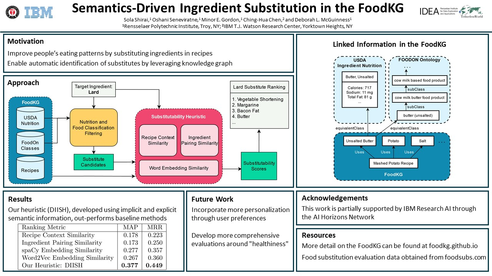

Ingredient Substitutions
We are exploring the possibilities of using the FoodKG to suggest ingredient substitutions in recipes. This work is motivated by trying to make recipes healthier for people with specific dietary constraints, like trying to reduce their carbohydrate intake or avoiding eating specific types of foods.
Approach
Diet-Improvement Ingredient Substitution Heuristic (DIISH)
We calculate a substitutability score based on a heuristic we have developed, DIISH. This heuristic combines both implicit and explicit semantic information about ingredients to try to determine good substitutes.
We calculate implicit semantics using word embeddings models - a Word2Vec model trained on data from the Im2Recipe project, and a word embedding model from spaCy.
We calculate explicit semantics using recipe and ingredient information in the FoodKG. We calculate scores to try to capture information like whether ingredients are used in similar recipe contexts and whether ingredients are paired together with similar ingredients.
The DIISH substitutability score is calculated for ingredients, and we rank substitute candidates to provide our final result. We also leverage the FoodKG's links to FoodOn's food ontology to help generalize ingredient uses, as well as filter out options that are unlikely to be considered good substitutes.
Substitute Data
One source that we used to collect substitution data is The Cook's Thesaurus. This website has a large catalog of ingredients, providing background information about the ignredient as well as some common options for substitutions.
We also use Food.com review data to collect more data on substitutions. More information about the data set can be found here.
ISWC 2020 Poster
